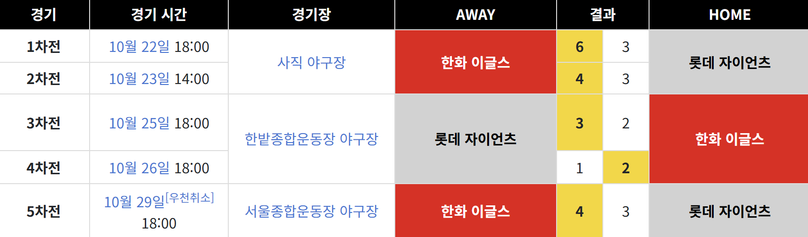

구단 소개
한화이글스는 충청권을 연고로 1985년 한국 프로 야구(KBO)의 제7구단으로 출범했습니다.
대전광역시 중구 부사동에 위치한 대전 한화생명볼파크를 홈 구장으로 이용하고 있으며, 제2구장은 충청북도 청주시 서원구 사직동에 위치한 청주야구장입니다.보다 많은 분들이 야구를 관람하며 행복을 느낄 수 있도록 한화이글스는 투혼을 담은 경기를 위해 최선을 다하고 있습니다. 지속적인 강팀으로 발돋움 하고자 내부 육성 시스템을 정비, 중장기 계획을 바탕으로 한화이글스의 감독 및 코칭 스태프, 선수, 프런트 모두가 함께 노력하고 있습니다.
팀 역사 타임라인
| 연도 | 주요 사건 |
|---|---|
| 1986 | 한화 이글스 창단 |
| 1988 | 한국시리즈 준우승 |
| 1989 | 한국시리즈 준우승 |
| 1991 | 한국시리즈 준우승 |
| 1992 | 한국시리즈 준우승 |
| 1999 | 한국시리즈 우승 |
| 2006 | 한국시리즈 준우승 |
| 2023 | 리빌딩 시작 및 신인 유망주 대거 합류 |
우승 정보
한화 이글스는 1999년 한국시리즈에서 우승을 차지하며 최고의 자리에 올랐습니다. 이 외에도 수차례 포스트시즌에 진출하여 팬들에게 감동을 선사했습니다.
1999년부터 새롭게 시작된 양대리그 제도를 통해, 포스트 시즌이 드림리그 1위 - 매직리그 2위 / 매직리그 1위 - 드림리그 2위가 맞붙어 승자가 한국시리즈에 진출하는 방식으로 개최되었습니다.
매직리그 2위였던 한화 이글스는(당시 전체 승률 4위) 구대성을 앞세워 드림리그 1위(전체 승률 1위)였던 두산 베어스를 상대로 플레이오프에서 4연승으로 제압하여 여유있게 기다리고 있었습니다.
반면, 드림리그 2위 롯데 자이언츠(당시 전체 승률 2위)는 매직리그 1위(전체 승률 3위) 삼성 라이온즈와의 플레이오프에서 1승 3패로 불리한 상황에서 4승 3패로 매우 힘겹게 역전하여 올라왔던 상태
결국 롯데 자이언츠를 한화 이글스가 4승 1패로 꺾고 창단 첫 우승을 따낸 시리즈입니다.